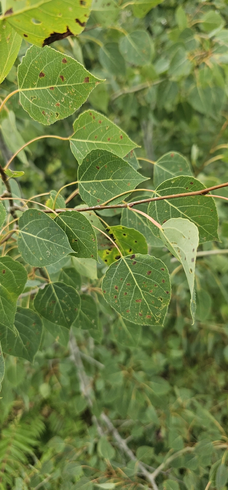

乔木 · 植物界
毛白杨 Populus tomentosa

中国北方重要的用材与防护树种，树干通直高大，叶背密生白色绒毛，生长迅速，常见于平原与河岸。
- 分类
- 门被子植物门纲木兰纲目杨柳目科杨柳科属杨属
- 栖息环境
- 海拔 1500 米以下的平原、河岸与沟谷，耐寒耐旱，喜深厚土壤
- 地理分布
- 中国华北、西北、黄淮海平原及辽宁南部
- 保护级别
- 暂无评估；中国未列入国家重点保护野生植物名录
物种志
毛白杨为落叶大乔木，高可达 30 m，树干通直，树冠卵圆形；树皮灰绿色，老树基部纵裂；长枝上的叶片三角状卵形、较大，短枝上的叶片较小、卵圆形，叶背及叶柄密被白色绒毛，故得名。早春先花后叶，雄花序呈葇荑状下垂，雌花序较细长；蒴果成熟后裂开，吐出白色杨絮。
毛白杨是中国特有树种，分布于华北、西北至黄淮海平原，喜光、耐寒、耐旱，对土壤适应性强，生长快，是北方平原绿化的主力。木材轻软，可供建筑、家具、造纸与火柴用；树皮可入药，有祛风除湿之效。作为“三北”防护林与农田林网的主要树种，毛白杨在防风固沙、保护农田方面作用显著，但春季杨絮也给部分城市带来困扰。毛白杨根蘖能力强，采伐后容易萌发新枝；叶片在风中哗哗作响，是北方平原上让人熟悉的声音。
形态与习性
- 株高可达 30 m，胸径可达 1 m
- 花期3–4 月，先花后叶
- 果期4–5 月，蒴果开裂飘出杨絮
- 光照强阳性，喜光不耐庇荫
- 水分耐旱，年降水量 400–700 mm 即可生长
- 土壤深厚肥沃的沙壤土或壤土，耐轻度盐碱
- 主要用途防护林、农田林网、建筑与造纸用材
趣味知识
- 毛白杨雌雄异株，春季飘飞的杨絮来自雌株的种子，并非花瓣。
- 毛白杨生长极快，10 年左右即可成材，是北方平原造林的主力树种。
- 叶背的白色绒毛能减少水分蒸发，帮助毛白杨适应干旱多风的环境。